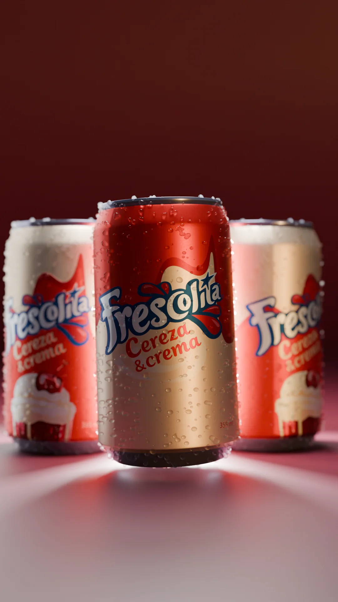
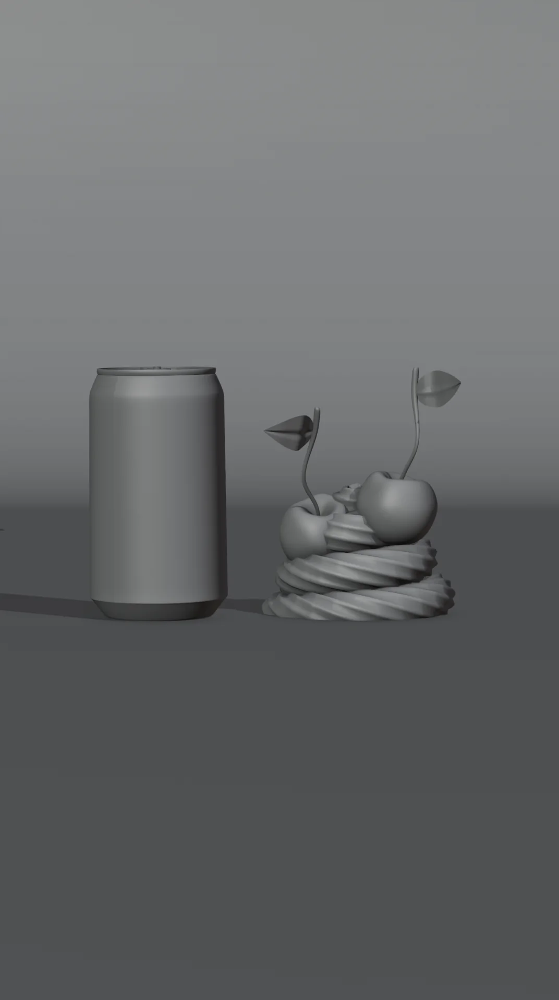
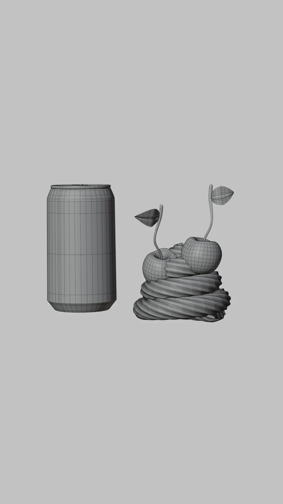
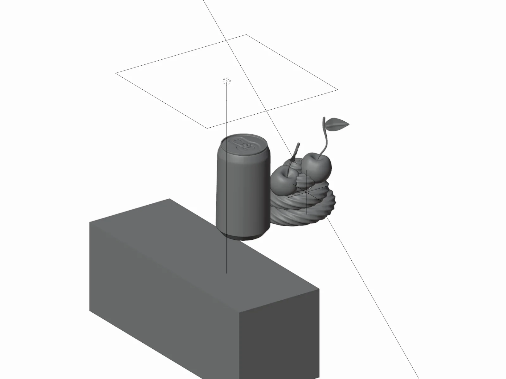

01 · Product visualization
Frescolita — Cherry & Cream

Beverage CGI concept for Frescolita, a Venezuelan soda brand — a "Cherry & Cream" flavor extension that doesn't exist in the real lineup.
Full pipeline in Blender: can modeling, condensation setup, label artwork, lighting and rendering in Cycles. Label design and color direction done by me in Illustrator, then carried into the render so the packaging and the shot were art-directed as one piece.
Includes a 15-second product animation, plus process shots: clay pass, wireframe and the key light setup. (Two additional fill panels sit outside the frame of the lighting diagram.)

Process
From the standing-can shot in the same series: same can model and cherries.


